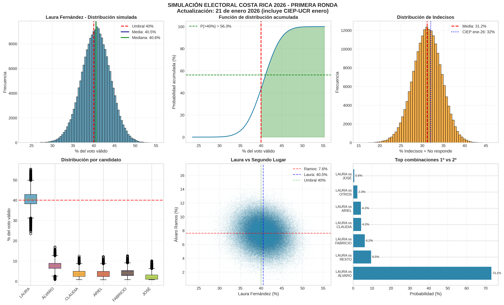
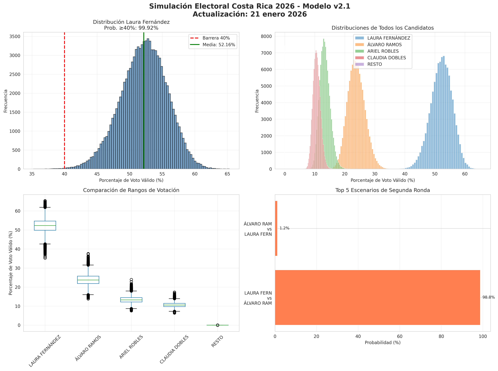

Acerca del Estudio
¿Qué se hizo y por qué?
Se creó un modelo matemático que simula la elección 200,000 veces para entender qué tan probable es que se defina la presidencia en primera ronda. El modelo fue mejorado reemplazando el enfoque WLS por un promedio ponderado con decay temporal exponencial, produciendo intervalos de confianza más robustos. Las encuestas son solo una "foto" del momento, mientras que este modelo mide la incertidumbre y el riesgo de cambios futuros.
¿De dónde vienen los datos?
Se utilizaron encuestas de alta calidad (tipo papeleta) realizadas entre octubre de 2025 y enero de 2026. La última actualización incluye la encuesta CIEP-UCR del 21 de enero 2026 (transversal aleatoria, n=1,006, MoE ±3.1 pp). También se incluyó información histórica sobre cómo votan realmente los costarricenses, diferenciando entre quienes siempre votan y quienes deciden al final.
Los supuestos del modelo
- Corrige los sesgos específicos de cada encuestadora ("efecto de casa").
- Trata a los indecisos (32%) como el factor clave que definirá el resultado.
- Agrupa a partidos pequeños para dar mayor estabilidad a los cálculos.
- Asume que la participación depende de si hay líderes claros o mucha fragmentación.
Indicadores Clave
Victoria en 1ra Ronda
Probabilidad Laura Fernández ≥ 40%
Probabilidad de Balotaje
Ningún candidato alcanza el 40%
Liderazgo (1er Lugar)
Probabilidad de quedar de primero
Proyección de Votos Válidos
| Candidato | Media (%) | Intervalo (80%) |
|---|---|---|
| Laura Fernández | 40.51% | [36.07% - 44.93%] |
| Álvaro Ramos | 7.62% | [5.23% - 10.01%] |
| Fabricio Alvarado | 4.09% | [1.62% - 6.45%] |
| Claudia Dobles | 3.71% | [1.20% - 6.04%] |
| Ariel Robles | 3.67% | [1.17% - 6.02%] |
| Otros Agregados | 3.14% | [1.00% - 5.42%] |
| José Aguilar (Avanza) | 2.24% | [0.95% - 4.27%] |
| Resto | 1.92% | [0.00% - 7.08%] |
Nota: Datos actualizados con encuesta CIEP-UCR del 21 de enero 2026. Modelo mejorado con promedio ponderado y decay temporal exponencial.
Gráficos y Análisis Visual
Simulación Electoral Costa Rica 2026 (Actualizado - Enero 2026)
Visualización integral de las simulaciones con distribuciones de probabilidad, intervalos de confianza y análisis de escenarios. Modelo actualizado con datos CIEP-UCR del 21 de enero 2026.

Descargar Imagen{kind=link}
Visualización Monte Carlo
Gráfico de las 200,000 simulaciones Monte Carlo mostrando distribuciones de resultados

Descargar Imagen{kind=link}
Cómo Funciona Este Repositorio
Estructura del Proyecto
Este repositorio contiene todos los componentes del análisis electoral:
- cr_presidential_mc_2026_v2.py - Código Python actualizado del modelo
- Articulo Modelo de Simulación Elecciones CR 2026.pdf - Documento académico completo
- DOCUMENTO_TECNICO_METODOLOGIA.txt (1).pdf - Metodología técnica detallada
- resumen_candidatos_v2.csv - Datos de resultados por candidato (actualizado)
- top2_pairs_v2.csv - Análisis de combinaciones (actualizado)
- simulacion_cr2026_v2.png - Visualización principal actualizada
- simulaciones_mc_2026.csv - Dataset completo (45 MB, 200,000 escenarios)
Clonar el Repositorio
Para obtener una copia local del proyecto:
cd simulacionelecciones2026
Ejecutar el Análisis
Requisitos: Python 3.8+, Jupyter Notebook
pip install pandas numpy matplotlib seaborn scipy jupyter
# Abrir el notebook
jupyter notebook "Modelo_de_Simulación_Elecciones.ipynb"
Tecnologías Utilizadas
Lenguajes y Frameworks
- Python 3.x
- Jupyter Notebook
- HTML5 / CSS3
- Bootstrap 5
Librerías de Python
- Pandas - Análisis de datos
- NumPy - Cálculos numéricos
- Matplotlib/Seaborn - Visualización
- SciPy - Estadística avanzada
Contribuir al Proyecto
Para contribuir con mejoras o correcciones:
git checkout -b feature/mi-mejora
# Hacer tus cambios y commit
git add .
git commit -m "Descripción de los cambios"
# Push y crear Pull Request
git push origin feature/mi-mejora
Recursos y Documentación
💻 Código Python - Jupyter Notebook
Notebook interactivo con todo el código del modelo de simulación. Incluye 200,000 simulaciones Monte Carlo.
Descargar Notebook🔒 Seguridad del Proyecto
Política de seguridad y mejores prácticas implementadas en el repositorio.
Ver SECURITY.md📖 Documentación del Proyecto - README
Guía completa del repositorio, instrucciones de uso y descripción general del proyecto.
Ver README.mdDatos Abiertos (Open Data)
Todos los datos generados por el modelo están disponibles en formato CSV para análisis independiente:
resumen_candidatos_v2.csv
Estadísticas por candidato: medias, intervalos de confianza, probabilidades (actualizado enero 2026)
Descargar CSVtop2_pairs_v2.csv
Análisis de combinaciones más probables para segunda ronda (actualizado enero 2026)
Descargar CSV